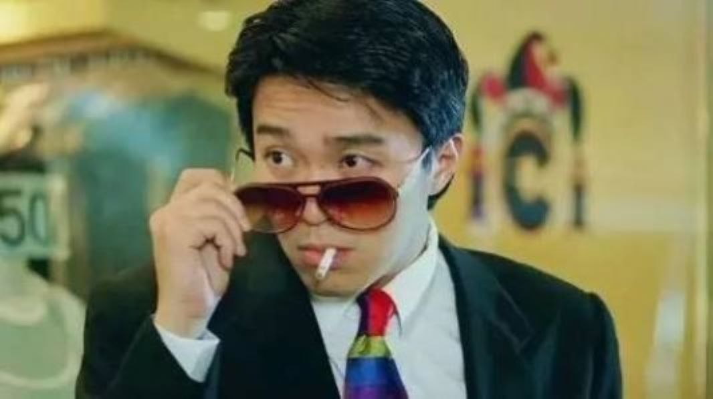
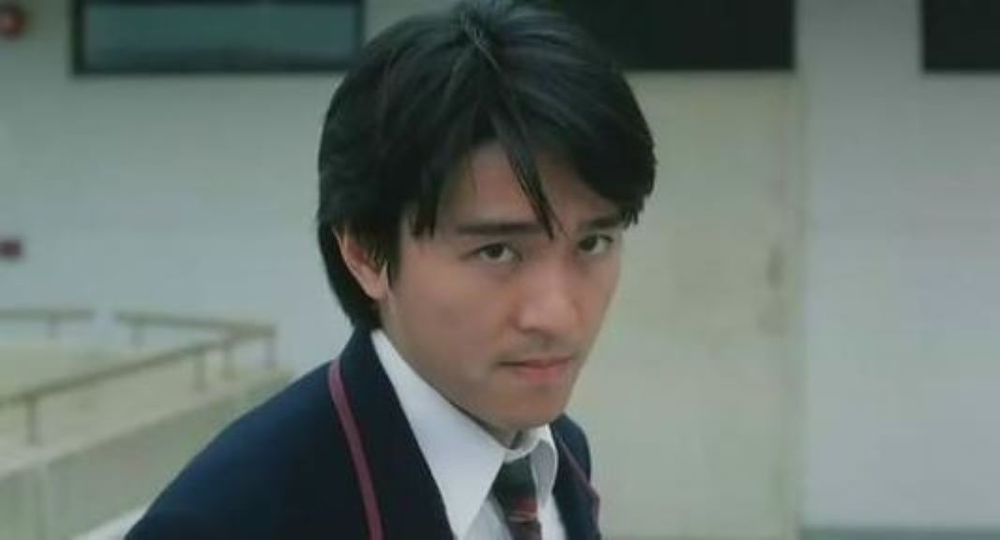

周星驰
周星驰（Stephen Chow），1962年6月22日出生于香港，祖籍浙江宁波，中国香港男演员、导演、编剧、制作人、商人，毕业于无线电视艺员训练班 。
早年经历
- 1980年，时年18岁的周星驰在丽的电视（亚洲电视前身）当特约演员而入行，首次于青春电视剧《I.Q.成熟时》演出，同时兼职办公室助理。
- 1981年，经戚美珍介绍进入无线电视艺员训练班第11期的夜训班。在训练班的最后3个月开始在无线电视的电视连续剧当临时演员。
- 1983年，毕业后不久，他被安排到儿童节目《430穿梭機》担任主持人4年。 周星驰于工作之余学习演技。于1988年演出李修贤监制的电影《霹雳先锋》，他凭该片夺第25届台湾金马奖最佳男配角。
- 1990年，周星驰担任低成本电影《赌圣》的主角，票房高达41326156港元，首破香港影史纪录，周星驰凭着这部电影奠定了巨星的地位。
- 1991年，周星驰担认主角的《逃学威龙》，票房高达43829449港元，第二次大破香港影史纪录。这时他的票房号召力与成龙、周润发并驾齐驱，三人被喻为“双周一成”，周星驰开始被媒体公开称为“星爷”。
- 1992年，周星驰主演7部电影，其中5部囊括香港票房排行榜前五名，更凭大破香港影史纪录的《审死官》获得亚太影展影帝大奖。于是，1992年被媒体称为“周星驰年”。
- 自1990年代初，周星驰开始参与编剧、导演等工作。早在1993年，周星驰便初次列名导演之一。
- 2001年5月2日晚，周星驰到访北京大学，在百周年纪念讲堂直接面对北大的学生与网友。近5、6年来由各著名高校的学生倡导形成的“周星驰热”也终于达到了一个高潮。周星驰和他的电影的影响已经远远超出了大屏幕的范围，渗透到了当今中国的文化甚至是日常生活中
。
- 1996年和永盛娱乐完约后，他成立了星辉海外有限公司，作为出品人首先制作了《食神》。而其他电影像《唐伯虎点秋香》、《破坏之王》、《国产凌凌漆》、《大内密探零零发》、《喜剧之王》等等周星驰皆有参与幕后编导。
经典作品
- 1990年，在电影《赌圣》中饰演左颂星
- 1991年，在电影《家有喜事》中饰演常欢
- 1992年，在电影《武状元苏乞儿》中饰演苏察哈尔灿
- 1993年，在电影《唐伯虎点秋香》中饰演唐伯虎
- 1994年，在电影《国产凌凌漆》中饰演凌凌漆
- 1995年，在电影《回魂夜》中饰演Leon
获奖作品
金马奖
| 年份 |
颁奖典礼 |
奖项 |
影片 |
| 1988年 |
第25届金马奖 |
最佳男配角 |
霹雳先锋 |
| 1992年 |
第29届金马奖 |
最佳男主角 |
审死官 |
| 2005年 |
第42届金马奖 |
最佳导演 |
功夫 |
| 2013年 |
第50届金马奖 |
最佳动作设计 |
西游降魔篇 |
照片


